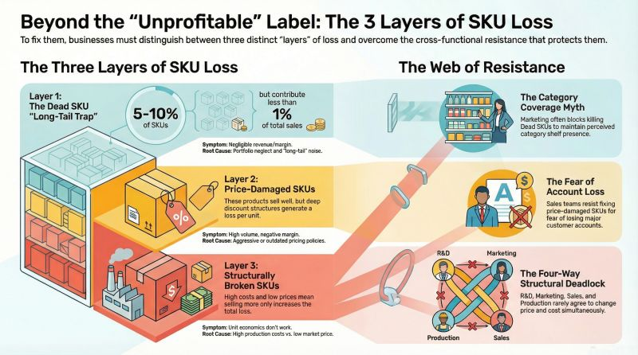
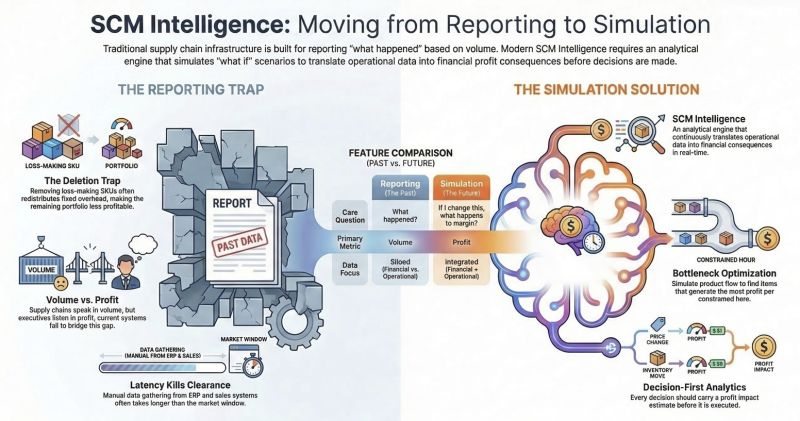
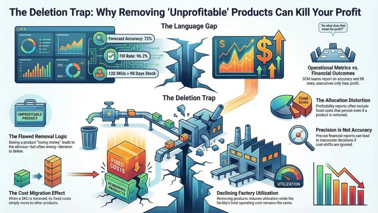
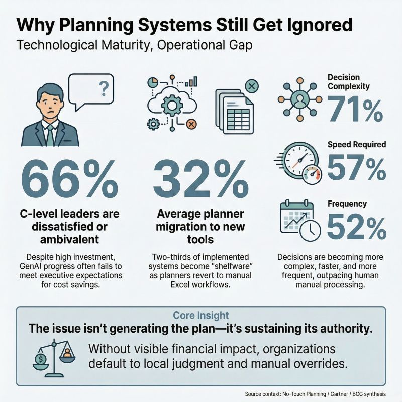
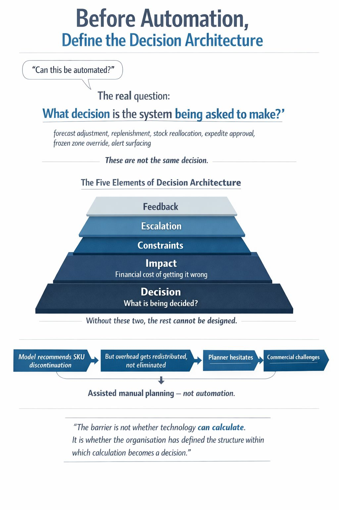
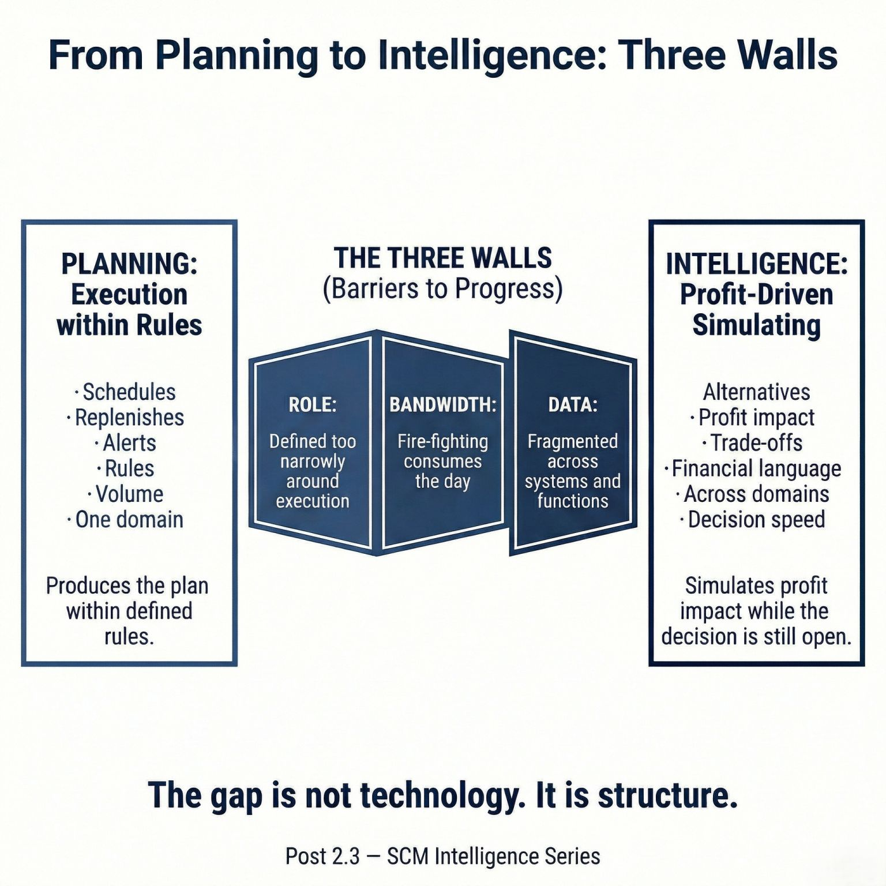

Chapter 1 · Post 1.1

What Consulting Taught Me — and What Being on the Ground Made Me Realise
Profit leakage in supply chains follows the same structure — whether you're in Seoul, California, or Tokyo.
I spent the first half of my career advising supply chains. The second half, running them — across Korea, US, and Japan. The markets were distinct. The cultures, consumer behaviours, and distribution structures all varied considerably. And yet the underlying pattern of profit erosion? Remarkably consistent.
As a consultant, I believed better process design would solve the problem. What the ground taught me: you can redesign a process in weeks. Changing the organisation around it takes years. And unless you look at the data directly, the real source stays invisible.
If you've worked in supply chain, you'll recognise this scene. End of quarter. Products sitting quietly in a warehouse corner are suddenly brought to the conference table. "The shelf life is nearly up. What are we going to do?" Markdowns, promotions, write-offs. Every quarter, without fail.
I witnessed this in Seoul, in California, and in Tokyo. For a long time, I attributed it to poor forecasting. Having examined data across three markets, I'm now quite certain — this is not a forecasting failure. It is a structural one.
Fast-movers are largely self-correcting. Strong underlying demand absorbs inventory naturally. The market does the work, not the system.
And herein lies the paradox. The more reliably fast-movers correct themselves, the more confident management becomes that everything is functioning well. Viewed in aggregate, the numbers look acceptable. This is the Aggregation Trap.
That misplaced confidence is precisely what allows tail SKUs to go unmanaged. Commercial teams concentrate on high-velocity lines — that is where their targets sit. Brand teams maintain portfolio breadth — slower lines still require shelf presence.
Caught between these two forces, tail SKUs continue to be produced to MOQ with no one actively accountable for their sell-through. No single party is at fault. This is simply how the structure operates. And it is becoming structurally worse.
Consumer fragmentation and channel proliferation have caused SKU counts to expand dramatically. Individually, each loss appears negligible. Collectively? Death by a thousand cuts. The Long-tail Trap.
The deeper issue is that supply chain continues to speak in the language of volume — whilst executives are waiting to hear something else entirely.
ProfitabilityLong-tailAggregation Trap
Chapter 1 · Post 1.2

Beyond the "Unprofitable" Label: The 3 Layers of SKU Loss
Loss-making SKUs aren't a discovery problem. They're a neglect problem.
Not all loss-making SKUs are the same. The label "unprofitable" conceals at least three very different situations that require entirely different responses.
Layer 1 — Pricing hasn't kept pace with cost. The product was designed at one margin. Since then, input costs moved, trade terms shifted, or promotional depth crept up. The product still sells. The market still wants it. It just doesn't make money any more. The fix is commercial: renegotiate, reprice, or restructure the promotion.
Layer 2 — Cost structure has eroded. Yield has fallen. A key input is now more expensive. Scale has dropped below the threshold where fixed-cost absorption still works. The fix is operational: recipe change, supplier switch, production consolidation.
Layer 3 — The product never found its market. Demand never materialised. The forecast was over-optimistic from day one. These SKUs need a fundamentally different conversation: not "how do we fix it?" but "why did we produce this much?"
Marketing says: "Taste changes damage the brand." Production says: "New specs drop yields." Both doors need opening, but four or five people hold the keys — and no one turns theirs first. These SKUs sit unchanged for years.
But there's a deeper issue still. This classification requires design-stage cost targets from PLM, actual costs from ERP, discount data from Sales, inventory turns from Logistics. Different systems, different time horizons — all needing to converge.
Gathering data: manual. Making the call: manual. This can be a one-off project. It cannot become a monthly rhythm. The distance between seeing once and seeing continuously — that determines how long a loss-making SKU survives.
SKU RationalisationCost StructurePortfolio
Chapter 1 · Post 1.3

The High Price of "Deal With It Later"
The most expensive decision in front of slow-moving stock is "let's deal with it later."
There is always one question that surfaces in the room. "So what are we actually going to do about it?"
In front of that question, organisations tend to move in predictable ways. Sales says: "Let's park it for now." Marketing says: "If we discount now, we blow the margin target. Wait until it stops moving." SCM is quietly panicking.
Time passes. The shelf-life window closes. What a 10% markdown would have resolved three months ago now requires 40% — and the channel isn't particularly interested at any price. The remaining options are a distressed clearance or a write-off.
They held firm to protect the margin. The margin was destroyed anyway.
When you put a number on what "later" actually costs, it breaks down into four things.
First, trapped capital. Stock sitting in a warehouse for ninety days is money that cannot be deployed elsewhere. Second, warehousing costs. Cold storage is not cheap. These costs accumulate quietly, every day. Third, production capacity consumed. That inventory required factory time to make — the contribution margin never generated on a higher-performing SKU is a real loss. Fourth, channel negotiating power. When shelf life is comfortable, the channel is accommodating. When it is not, the channel knows it.
Inventory is an asset whose options narrow with time. The goal is not to reduce stock. It is to make the right decision at the right moment.
DispositionTwo ClocksMarkdown
Chapter 1 · Post 1.4

The Two Clocks of Inventory: Balancing Cost vs. Leverage
Most companies only hear one. Whilst inventory sits in a warehouse, two clocks tick simultaneously.
The cost clock: storage fees, tied-up capital, production capacity consumed. These accelerate over time.
The negotiation clock: when shelf life is comfortable, 10% off can persuade a channel partner. When expiry looms, 40% won't suffice. The channel holds all the leverage.
These two clocks move in opposite directions. The longer you hold, the higher your costs. The longer you hold, the weaker your hand.
Put the numbers on the same table: a 10% discount today reduces margin by a known amount. Waiting 30 days means costs accumulate, the required discount deepens, and channel acceptance falls. When these figures sit side by side, no one needs to argue on instinct.
Simple concept. But in practice, you hit a wall.
Channels matter. Online shows high price elasticity. Supermarkets impose listing conditions. Convenience stores enforce tight shelf-life rules. The same discount produces completely different responses.
Shelf life matters. Thirty days on a 12-month ambient product is comfortable. Thirty days on a 14-day fresh product is a crisis.
Product type × lifecycle × season × channel × remaining shelf life — plus location, procurement structure, storage constraints. Two curves, one table. Simple concept. But every product, channel, season, and location draws a different curve. A single formula for all of this? Impossible. What's needed is not a universal equation — but a system that draws each curve individually and signals when a crossing point approaches.
Two ClocksInventoryShelf Life
Chapter 1 · Post 1.6

Most Supply Chain Decisions Are Simulations, Not Reports
Most supply chain decisions are treated as reporting problems. They are not. They are simulation problems.
Yet much of today's analytical infrastructure is still optimised for reporting rather than simulation.
When capital costs rise, inventory becomes a financial liability. When shipping rates spike, the optimal production-to-distribution mix shifts overnight. When a key supplier signals disruption, the financial implication varies dramatically depending on which products are affected and where safety stock sits.
These are not reporting questions. They are questions that can only be answered by simulating a scenario — running the numbers forward, comparing alternatives, and seeing the financial consequences before committing to a decision.
A report tells you what happened. A simulation tells you what would happen if — and then lets you compare alternatives before choosing.
The gap is not analytical skill. The gap is that simulation requires a fundamentally different infrastructure: connected data that updates itself, compute that runs in minutes rather than hours, and an interface that translates results into the financial language executives use to make decisions.
SimulationInfrastructureDecision Architecture
Chapter 1 · Post 1.6

The Deletion Trap
SCM speaks in metrics. The boardroom hears profit.
The supply chain team presents the monthly review. Forecast accuracy: 72%. Fill rate: 96.2%. Inventory turns: up 0.3. 120 SKUs above 90 days of stock cover. All accurate. All operationally meaningful.
The CEO asks one question. "So what does that mean for profit?"
This moment repeats itself in boardrooms everywhere. The problem is not data. It is language. Supply chains report in operational metrics. Executives make decisions in financial outcomes. Between those two perspectives, translation rarely happens.
Most SKU-level profitability reports are built on absorption costing — indirect costs allocated through multiple layers. The allocation basis determines the answer. Use revenue share, and one set of products appears profitable. Use production hours, and the picture shifts.
And this is where many organisations fall into what I call the Deletion Trap. A product appears unprofitable. The logical response: remove the SKU. But when that product disappears, the costs it was absorbing do not. They move elsewhere. The remaining portfolio absorbs them. The upside is capped: the maximum possible improvement equals exactly the contribution that product was generating. The downside is open-ended.
This is not an argument against ever discontinuing a product. It is an argument for simulating what happens to the rest of the portfolio before pulling the trigger. Without that simulation, organisations end up running on a treadmill — cutting, reallocating, cutting again — without the total cost base ever actually shrinking.
Deletion TrapOverhead AllocationMC/PROCO/CEBIT
Chapter 2 · Post 2.1

Why No-Touch Planning Still Ends in Spreadsheets
No-Touch Planning is often presented as the natural end-state of supply chain maturity. Yet many organisations still return to spreadsheets.
This is often explained as a trust problem. But the issue is usually more structural.
Planning systems do not all do the same job. Some mainly consolidate plans — they collect inputs from different functions, align them, and create a single number. Others are the place where plans are actually formed, adjusted as conditions change, and tested through immediate simulation of operational and financial consequences.
Only the second type moves an organisation materially closer to No-Touch Planning.
Not every planning decision requires the same degree of system sophistication. In some categories, the room for optimisation is genuinely narrow. Shelf life, production cadence, and other hard constraints already determine most of the answer. In such cases, static rules may be adequate.
In others, they are not. Where demand variability is high, where SKU and lot complexity matter, and where inventory decisions carry meaningful financial consequences, the gap between static logic and system-led simulation becomes substantial. That is where regression to spreadsheets destroys the most value.
Safety stock illustrates the point. In volatile and financially material categories, safety stock should not remain a fixed inheritance from legacy logic. It should move as demand moves, as lead times shift, and as inventory positions change. And the implications should be visible immediately for service, inventory, operations, and margin.
If the system cannot absorb change within the planning logic itself — if it cannot show the effect on service, inventory, operations, and margin without manual reconstruction — then the organisation may plan in the system, but it will continue to decide in the spreadsheet.
No-Touch PlanningSystemsSpreadsheet
Chapter 2 · Post 2.2

Before Automation, Define the Decision Architecture
One of the most common questions in supply chain transformation is this: Can this decision be automated?
It sounds reasonable. But it may not be the first question. A more fundamental one comes earlier: What decision, exactly, is the system being asked to make?
Is the system adjusting forecast? Recommending replenishment? Reallocating constrained stock? Approving an expedite? Breaking a frozen zone? Or simply surfacing an alert? These are not the same decision. Yet they are often treated as one automation agenda.
A system cannot meaningfully automate a decision that the organisation itself has not clearly defined.
For a planning decision to become operationally credible, five things need to be explicit.
First, the decision itself. What is being decided? Second, the impact — not in KPI terms, but in margin terms. What is the financial cost of getting this decision wrong? Third, the constraints. What must not be broken, even if the model finds an attractive answer? Fourth, the escalation path. What can run automatically, and what still requires human intervention? Fifth, the feedback loop. How will the organisation learn from overrides, exceptions, and outcome gaps?
The model recommends discontinuing a SKU. The analysis looks sound. But no one has asked whether the overhead allocated to that SKU disappears with it — or simply gets redistributed across what remains. The planner hesitates. Commercial challenges it. Finance tries to reconcile it afterwards. What looked like automation becomes another version of assisted manual planning. Not because the model was necessarily wrong. But because the decision was never architected to absorb its own consequences.
Decision ArchitectureGovernanceNo-Touch Planning
Chapter 2 · Post 2.3

A Planning System Is Not Yet Intelligence
Many organisations already have a planning system. That is not the same as having intelligence.
Planning tells you what the rules say should happen next. Reorder points, safety stock, MOQ, production sequences — the system applies the logic it was given.
Intelligence tells you what happens to the margin when those rules are broken — and whether breaking them might actually be the right answer.
The distinction matters because in most supply chains, three structural barriers prevent SCM from functioning as a profit-decision orchestrator.
First, the role is defined too narrowly. SCM is seen as an execution function — responsible for fulfilling demand, not shaping it. When profitability conversations happen, SCM is often not at the table.
Second, bandwidth is consumed by firefighting. Planners spend the majority of their time managing exceptions, chasing shortages, and reconciling data between systems. There is little capacity left for the kind of forward-looking analysis that intelligence requires.
Third, data is fragmented. Cost data sits in Finance. Demand signals sit in Sales. Production constraints sit in Operations. Inventory positions sit in Logistics. Assembling a cross-functional view for a single decision requires manual effort that cannot scale.
A planning system applies rules. Intelligence reveals the financial consequences of those rules — and creates the option to change them before the damage is done. That is the gap between operating and designing.
IntelligencePlanning vs. SimulationSCM Role